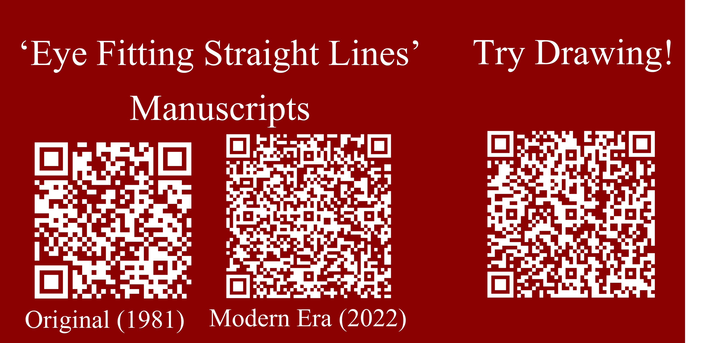
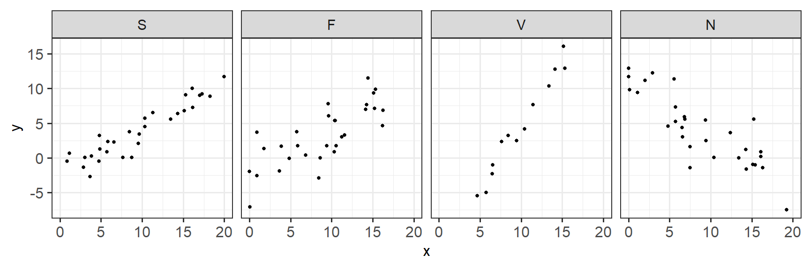
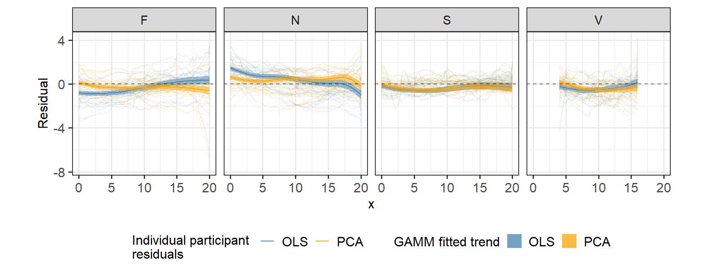

How do statistical regression results compare to intuitive, visually fitted results?


Eye Fitting Straight Lines in the Modern Era
Emily A. Robinson , 
emily.robinson@huskers.unl.edu
@earobinson95
1 Department of Statistics, University of Nebraska - Lincoln
Introduction
We all use statistical graphics, but how do we know that the graphics we use are communicating properly? We need human testing of graphics in order to draw broad conclusions, develop guidelines for graphical design, and improve graphical communication.
Fitting Trends by Eye
Fitting lines by eye through a set of points has been explored since the 20th century (Finney 1951; Mosteller et al. 1981; Ciccione and Dehaene 2021). Common methods of fitting trends by eye involved maneuvering a string, black thread, or ruler until the fit is suitable, then drawing the line through the set of points. In 2015, the New York Times introduced an interactive feature, called You Draw It. Readers were asked to input their own assumptions about various metrics and compare how these assumptions relate to reality.
Objectives
- Implement and validate the ‘You Draw It’ feature as a way to measure the patterns we see in data.
- Introduce a method for statistically modeling the participant drawn lines.
Methods
In the study, participants were shown an interactive scatter-plot along with the prompt, “Use your mouse to fill in the trend in the yellow box region.” Data Driven Documents (D3), a JavaScript-based graphing framework that facilitates user interaction, was used to create the ‘You Draw It’ visual. In order to allow for user interaction and data collection, we integrated the D3 visual into Shiny using the Strayer, Luraschi, and Allaire (2020) package.
The experiment was conducted through an R Shiny app found here.
All data processing was conducted in R statistical software. A total of \(N = 30\) points \((x_i, y_i), i = 1,...N\) were generated for \(x_i \in [x_{min}, x_{max}]\) where \(x\) and \(y\) have a linear relationship. Data were simulated based on a linear model with additive errors: \[\begin{align} y_i & = \beta_0 + \beta_1 x_i + e_i \\ \text{with } e_i & \sim N(0, \sigma^2). \nonumber \end{align}\]
Model equation parameters, \(\beta_0\) and \(\beta_1\), were selected to reflect the four data sets (F, N, S, and V) used in Mosteller et al. (1981).

Figure 1: Example of simulated data points displayed in a scatter-plot illustrating the trends associated with the four selected parameter choices.
Results
A total of 35 individuals completed 119 unique ‘You Draw It’ task plots. For each participant and parameter choice, the final feedback data set contained \(x, y_{drawn}, \hat y_{OLS}\), and \(\hat y_{PCA}\).
Fitted Regression Lines
We compared the participant drawn line to two regression lines determined by ordinary least squares (OLS) regression and regression based on the principal axis (PCA).
![Left: Comparison between an OLS regression line which minimizes the vertical distance of points from the line and a regression line based on the principal axis which minimizes the Euclidean distance of points (orthogonal) from the line. Right: Illustrates the data associated with and collected for one `You Draw It' task plot. Trend-lines include the participant drawn line (dashed black), the OLS regression line (solid steelblue) and the PCA regression line based on the principal axis (solid orange).](eye-fitting-straight-lines-in-the-modern-era_files/figure-html/ols-vs-pca-example-1.png)
Figure 2: Left: Comparison between an OLS regression line which minimizes the vertical distance of points from the line and a regression line based on the principal axis which minimizes the Euclidean distance of points (orthogonal) from the line. Right: Illustrates the data associated with and collected for one `You Draw It’ task plot. Trend-lines include the participant drawn line (dashed black), the OLS regression line (solid steelblue) and the PCA regression line based on the principal axis (solid orange).
Residual Trends
Using a generalized additive mixed model (GAMM), comparisons of vertical residuals in relation to the OLS fitted values (\(e_{OLS} = y_{drawn} - \hat y_{OLS}\)) and PCA fitted values (\(e_{PCA} = y_{drawn} - \hat y_{PCA}\)) were made across the domain.

Figure 3: Estimated trend line of the residuals between the participant drawn points and fitted values for both the OLS (blue) regression line and PCA (orange) regression line. Estimated residual trends with 95% confidence bands are overlaid on the observed individual participant residuals.
Estimated drawn trend-lines followed closer to the regression line based on the principal axes than the OLS regression line and is most prominent in data simulated with large variances. The reproducibility of these results serve as validation of the ‘You Draw It’ tool and method.
Future Work
Further investigation is necessary to implement this method in non-linear settings and with real data in order to facilitate scientific communication. This tool could also be used to evaluate human ability to extrapolate data from trends. In the future, we intend to create an R package designed for easy implementation of ‘You Draw It’ task plots in order to make this tool accessible to other researchers.
References
Ciccione, Lorenzo, and Stanislas Dehaene. 2021. “Can Humans Perform Mental Regression on a Graph? Accuracy and Bias in the Perception of Scatterplots.” Cognitive Psychology 128: 101406.
Finney, DJ. 1951. “Subjective Judgment in Statistical Analysis: An Experimental Study.” Journal of the Royal Statistical Society: Series B (Methodological) 13 (2): 284–97.
Mosteller, Frederick, Andrew F Siegel, Edward Trapido, and Cleo Youtz. 1981. “Eye Fitting Straight Lines.” The American Statistician 35 (3): 150–52.
Strayer, Nick, Javier Luraschi, and JJ Allaire. 2020. R2d3: Interface to ’D3’ Visualizations. https://CRAN.R-project.org/package=r2d3.